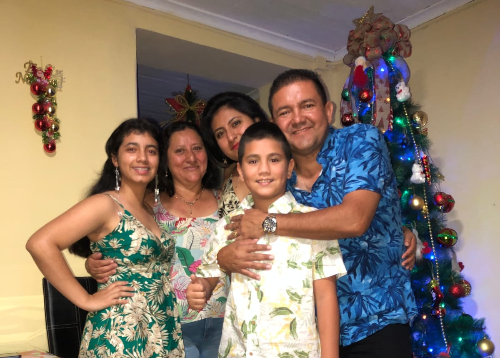

Presentación
Mi Familia
Mi familia ocupa un lugar muy importante en mi vida. Actualmente vivo con mi abuela paterna y mi hermano menor, quienes forman parte fundamental de mi día a día. Mi abuela ha sido una de las personas que más me ha apoyado a lo largo de mi vida, brindándome amor, consejos y acompañamiento en los momentos más importantes. Gracias a ella he aprendido valores que me ayudan a crecer como persona cada día.
Tengo una relación muy cercana con la familia por parte de mi papá, especialmente con mi tía y su esposo. Ellos han estado presentes en muchos momentos importantes de mi vida, apoyándome, cuidándome y preocupándose por mi bienestar. Siempre han estado ahí cuando los he necesitado, al igual que mi abuela, por lo que ocupan un lugar muy especial en mi corazón y forman una parte fundamental de mi familia.
Mis hermanos también son muy importantes para mí. Con mi hermano menor comparto gran parte de mi vida y muchos momentos cotidianos. Con mi hermano mayor mantengo una buena relación; aunque actualmente no nos comunicamos con tanta frecuencia, sé que puedo contar con él cuando lo necesite y eso es algo que valoro mucho.
Por otro lado, no mantengo una buena relación con mi padre y llevamos mucho tiempo sin comunicarnos. Además, no tengo una relación cercana con la mayor parte de la familia por parte de mi mamá, por lo que mi círculo familiar más cercano está conformado principalmente por las personas que han estado presentes y me han brindado su apoyo de manera constante.
Uno de los acontecimientos que más ha marcado mi vida fue el fallecimiento de mi mamá hace algunos años. Ella fue una persona muy especial para mí y teníamos una relación muy cercana. Nos apoyábamos mutuamente en los momentos difíciles, compartíamos nuestras alegrías y hablábamos de casi todo. Más que madre e hija, muchas veces éramos como amigas. Su amor, sus consejos y todo lo que me enseñó siguen acompañándome cada día. Aunque ya no está físicamente conmigo, siempre la llevaré en mi corazón, la recordaré con mucho cariño y la extrañaré profundamente.
Las personas que han permanecido a mi lado me han enseñado el verdadero significado del amor, la unión y el apoyo incondicional. Gracias a ellas encuentro la fuerza y la motivación para seguir adelante y trabajar por mis metas.
